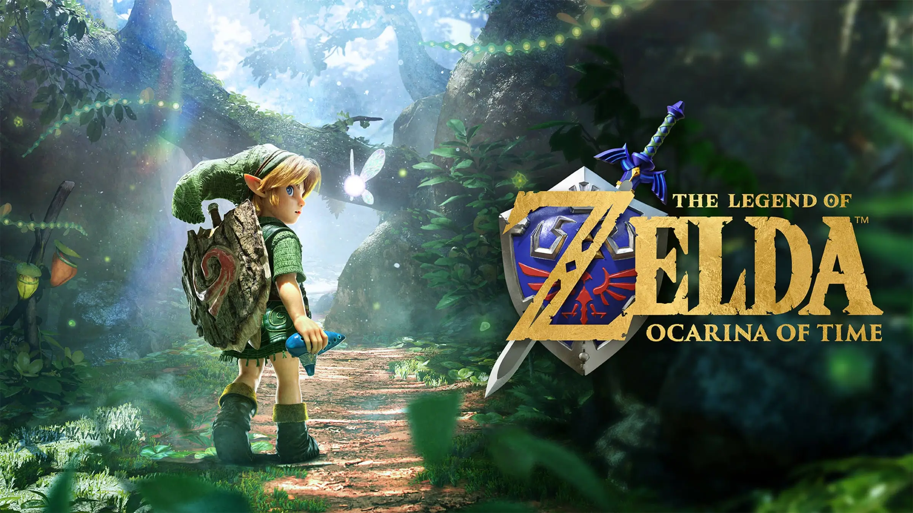
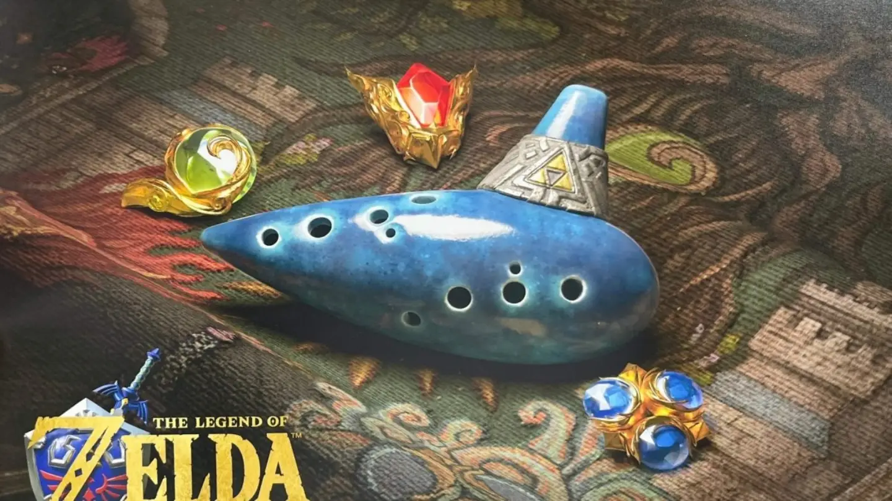

La leyenda renace para una nueva generación

Comienza la batalla por Hyrule. El malvado Ganondorf planea robar la mítica Trifuerza del Reino Sagrado y conquistar el mundo. Ahora Link debe convertirse en el héroe del tiempo y salvar el reino en esta historia clásica, creada desde cero para Nintendo Switch™ 2
The Legend of Zelda es una de las sagas más reconocidas de Nintendo y una de las series más importantes dentro de los videojuegos de aventura. Desde su primera entrega, la saga se ha caracterizado por combinar exploración, combates, resolución de acertijos y descubrimiento, invitando al jugador a recorrer mundos llenos de secretos.
Una de las características principales de Zelda es la libertad que ofrece al jugador para explorar. Bosques, montañas, templos, aldeas y mazmorras esconden secretos y desafíos que hacen que cada aventura sea diferente. Además, cada entrega introduce nuevos personajes, mecánicas y elementos que amplían el universo de la saga.
Descubre la historia
El nacimiento del reino de Hyrule
Antes de que el tiempo comenzara, antes de que los espíritus y la vida existieran... Tres diosas doradas descendieron sobre el caos que era Hyrule: Din, la diosa del Poder... Nayru, la diosa de la Sabiduría... y Farore, la diosa del Valor.
Din, con sus fuertes brazos de fuego, cultivó la tierra y creó el suelo rojo. Nayru derramó su sabiduría sobre la tierra y dio el espíritu de la ley al mundo. Farore, con su rica alma, produjo todas las formas de vida que mantendrían la ley.
Las tres grandes diosas, habiendo completado su trabajo, partieron hacia los cielos. Y en el punto de donde salieron, dejaron tres triángulos dorados. Desde entonces, el lugar donde se encuentran los triángulos sagrados ha sido el Reino Sagrado.-El Gran Árbol Deku
Una tierra dividida
Antes de la aventura de Link, Hyrule atravesó una época de enfrentamientos que cambiaría para siempre el destino de sus pueblos.
Hace mucho tiempo, el reino de Hyrule se vio envuelta en una gran guerra, muchos afirman que se
inició gracias a la codicia de la gente. Querían los tres triángulos dorados, la Trifuerza.
En medio del caos, una mujer huyó del campo de batalla llevando consigo a su bebé. En el camino
hacia un lugar seguro, fue gravemente herida, pero pudo llegar hasta el Bosque Kokiri. Allí, con su
último aliento, dejó al niño al cuidado del Gran Árbol Deku, esperando que pudiera crecer lejos de
la guerra. El nombre del bebé era Link.
Este chico creció en el bosque junto con los Kokiri, una raza de niños eternos que viven dentro del
bosque al cuidado del Gran Árbol y sus hadas compañeras. La infancia de Link no fue fácil, puesto
que como no era uno de ellos y no tenía su propia hada, siempre lo trataron diferente.
Una terrible visión
Años después de la terrible guerra de Hyrule, Link tuvo una extraña pesadilla cuya gravedad aún no era capaz de comprender.
Una mujer con ropajes de guerrera huía a caballo junto a una niña, perseguidas desde el castillo por un oscuro jinete. Cuando el jinete las perdió de vista, reparó en Link y lo observó con una sonrisa temible, justo antes de que despertara.
Link aún no sabía quiénes eran aquellas personas ni qué significaba aquel sueño. Solo sabía que algo estaba a punto de comenzar. Ya que, al despertar, descubrió que por fin había recibido a su hada.
Navi, la pequeña hada enviada para ser la compañera de Link, le explica que el Árbol Deku lo necesita.

¿Qué trae este remake?
Mirá de cerca cómo esta nueva versión reconstruye la aventura que ya conocés y la adapta a una nueva generación.

Una Hyrule completamente renovada
El reino de Hyrule ha sido reconstruido con nuevos gráficos, texturas, iluminación y materiales. Lugares que reconocés al instante vuelven a la vida con mucho más detalle.

Link se mueve de una forma diferente
El control fue rediseñado para una experiencia más moderna: movimiento más suave, salto manual y cámara libre para explorar Hyrule con mayor libertad.

Hyrule nunca estático
El ciclo de día y noche ahora continúa también dentro de los pueblos, haciendo que lugares como la Ciudadela de Hyrule se sientan más vivos mientras los recorrés.

Cinemáticas reimaginadas y con doblajes de voz
Las cinemáticas cuentan con actuaciones de voz y los personajes reciben nuevos diálogos, aportando otra dimensión a momentos que los fans recuerdan desde hace años.

Canta las canciones y descubre sus efectos
Con el micrófono de Switch 2, podés tararear una melodía aprendida para que Link la toque dentro del juego.

Tu historia, reunida en un solo lugar
Una nueva función permite consultar tu progreso y el próximo objetivo de la aventura. A medida que avances en el juego, un gran tapiz de la historia se va completando y convierte tu recorrido en una verdadera leyenda.